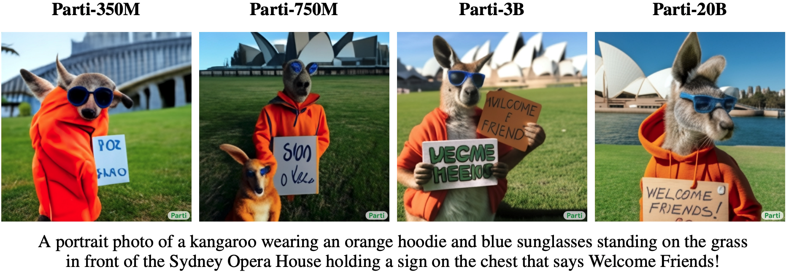

Large-Scale Pretraining with Transformers⚓︎
:label:sec_large-pretraining-transformers
So far in our image classification and machine translation experiments,
models have been trained on datasets with input--output examples
from scratch to perform specific tasks.
For example, a Transformer was trained
with English--French pairs (:numref:sec_transformer)
so that this model can translate input English text into French.
As a result, each model becomes a specific expert
that is sensitive to even a slight shift in data distribution
(:numref:sec_environment-and-distribution-shift).
For better generalized models, or even more competent generalists
that can perform multiple tasks with or without adaptation,
pretraining models on large data has been increasingly common.
Given larger data for pretraining, the Transformer architecture
performs better with an increased model size and training compute,
demonstrating superior scaling behavior.
Specifically, performance of Transformer-based language models
scales as a power law with the amount of model parameters,
training tokens, and training compute :cite:kaplan2020scaling.
The scalability of Transformers is also evidenced
by the significantly boosted performance
from larger vision Transformers trained on larger data
(discussed in :numref:sec_vision-transformer).
More recent success stories include Gato, a generalist model
that can play Atari, caption images, chat, and act as a robot :cite:reed2022generalist. Gato is a single Transformer that scales well when pretrained on diverse modalities,
including text, images, joint torques, and button presses.
Notably, all such multimodal data is serialized into a flat sequence of tokens,
which can be processed akin to text tokens (:numref:sec_transformer)
or image patches (:numref:sec_vision-transformer) by Transformers.
Prior to the compelling success of pretraining Transformers for multimodal data,
Transformers were extensively pretrained with a wealth of text.
Originally proposed for machine translation,
the Transformer architecture in :numref:fig_transformer
consists of an encoder for representing input sequences
and a decoder for generating target sequences.
Primarily, Transformers can be used in three different modes:
encoder-only, encoder--decoder, and decoder-only.
To conclude this chapter, we will review these three modes
and explain the scalability in pretraining Transformers.
Encoder-Only⚓︎
When only the Transformer encoder is used,
a sequence of input tokens is converted
into the same number of representations
that can be further projected into output
(e.g., classification). A Transformer encoder
consists of self-attention layers,
where all input tokens attend to each other.
For example, vision Transformers depicted in :numref:fig_vit
are encoder-only, converting a sequence of input image patches into
the representation of a special “<cls>” token.
Since this representation depends on all input tokens,
it is further projected into classification labels.
This design was inspired by an earlier encoder-only Transformer
pretrained on text: BERT (Bidirectional Encoder Representations from Transformers) :cite:Devlin.Chang.Lee.ea.2018.
Pretraining BERT⚓︎
:label:fig_bert-encoder-only
BERT is pretrained on text sequences using masked language modeling:
input text with randomly masked tokens is fed
into a Transformer encoder to predict the masked tokens.
As illustrated in :numref:fig_bert-encoder-only,
an original text sequence "I", "love", "this", "red", "car"
is prepended with the “<cls>” token, and the “<mask>” token
randomly replaces "love"; then the cross-entropy loss between the masked token "love"
and its prediction is to be minimized during pretraining.
Note that there is no constraint in the attention pattern of Transformer encoders
(right of :numref:fig_bert-encoder-only)
so all tokens can attend to each other.
Thus, prediction of "love" depends on input tokens before and after it in the sequence.
This is why BERT is a "bidirectional encoder".
Without need for manual labeling, large-scale text data
from books and Wikipedia can be used for pretraining BERT.
Fine-Tuning BERT⚓︎
The pretrained BERT can be fine-tuned to downstream encoding tasks involving single text or text pairs. During fine-tuning, additional layers can be added to BERT with randomized parameters: these parameters and those pretrained BERT parameters will be updated to fit training data of downstream tasks.
:label:fig_bert-finetune-classification
:numref:fig_bert-finetune-classification illustrates
fine-tuning of BERT for sentiment analysis.
The Transformer encoder is a pretrained BERT,
which takes a text sequence as input
and feeds the “<cls>” representation
(global representation of the input)
into an additional fully connected layer
to predict the sentiment.
During fine-tuning, the cross-entropy loss
between the prediction and the label
on sentiment analysis data
is minimized via gradient-based algorithms,
where the additional layer is trained from scratch
while pretrained parameters of BERT are updated.
BERT does more than sentiment analysis.
The general language representations learned
by the 350-million-parameter BERT
from 250 billion training tokens
advanced the state of the art for natural language tasks
such as single text classification,
text pair classification or regression,
text tagging, and question answering.
You may note that these downstream tasks include text pair understanding.
BERT pretraining has another loss for predicting
whether one sentence immediately follows the other.
However, this loss was later found to be less useful when pretraining RoBERTa,
a BERT variant of the same size, on 2000 billion tokens :cite:Liu.Ott.Goyal.ea.2019.
Other derivatives of BERT improved model architectures or pretraining objectives,
such as ALBERT (enforcing parameter sharing) :cite:lan2019albert,
SpanBERT (representing and predicting spans of text) :cite:joshi2020spanbert,
DistilBERT (lightweight via knowledge distillation) :cite:sanh2019distilbert,
and ELECTRA (replaced token detection) :cite:clark2019electra.
Moreover, BERT inspired Transformer pretraining in computer vision,
such as with vision Transformers :cite:Dosovitskiy.Beyer.Kolesnikov.ea.2021,
Swin Transformers :cite:liu2021swin,
and MAE (masked autoencoders) :cite:he2022masked.
Encoder--Decoder⚓︎
Since a Transformer encoder converts a sequence of input tokens
into the same number of output representations,
the encoder-only mode cannot generate a sequence of arbitrary length as in machine translation.
As originally proposed for machine translation,
the Transformer architecture can be outfitted with a decoder
that autoregressively predicts the target sequence
of arbitrary length, token by token,
conditional on both encoder output and decoder output:
(i) for conditioning on encoder output, encoder--decoder cross-attention
(multi-head attention of decoder in :numref:fig_transformer)
allows target tokens to attend to all input tokens;
(ii) conditioning on decoder output is achieved
by a so-called causal attention
(this name is common in the literature but is misleading
as it has little connection to the proper study of causality)
pattern (masked multi-head attention of decoder in :numref:fig_transformer),
where any target token can only attend to past and present tokens in the target sequence.
To pretrain encoder--decoder Transformers beyond human-labeled machine translation data,
BART :cite:lewis2019bart and T5 :cite:raffel2020exploring
are two concurrently proposed encoder--decoder Transformers
pretrained on large-scale text corpora.
Both attempt to reconstruct original text in their pretraining objectives,
while the former emphasizes noising input
(e.g., masking, deletion, permutation, and rotation)
and the latter highlights multitask unification
with comprehensive ablation studies.
Pretraining T5⚓︎
As an example of the pretrained Transformer encoder--decoder, T5 (Text-to-Text Transfer Transformer) unifies many tasks as the same text-to-text problem: for any task, the input of the encoder is a task description (e.g., "Summarize", ":") followed by task input (e.g., a sequence of tokens from an article), and the decoder predicts the task output (e.g., a sequence of tokens summarizing the input article). To perform as text-to-text, T5 is trained to generate some target text conditional on input text.
![Left: Pretraining T5 by predicting consecutive spans. The original sentence is "I", "love", "this", "red", "car", where "love" is replaced by a special “<X>” token, and consecutive "red", "car" are replaced by a special “<Y>” token. The target sequence ends with a special “<Z>” token. Right: Attention pattern in the Transformer encoder--decoder. In the encoder self-attention (lower square), all input tokens attend to each other; In the encoder--decoder cross-attention (upper rectangle), each target token attends to all input tokens; In the decoder self-attention (upper triangle), each target token attends to present and past target tokens only (causal).](../../img/t5-encoder-decoder.svg) :label:
:label:fig_t5-encoder-decoder
To obtain input and output from any original text,
T5 is pretrained to predict consecutive spans.
Specifically, tokens from text are randomly replaced
by special tokens where each consecutive span
is replaced by the same special token.
Consider the example in :numref:fig_t5-encoder-decoder,
where the original text is "I", "love", "this", "red", "car".
Tokens "love", "red", "car" are randomly replaced by special tokens.
Since "red" and "car" are a consecutive span,
they are replaced by the same special token.
As a result, the input sequence is "I", "<X>", "this", "<Y>",
and the target sequence is
"<X>", "love", "<Y>", "red", "car", "<Z>",
where "<Z>" is another special token marking the end.
As shown in :numref:fig_t5-encoder-decoder,
the decoder has a causal attention pattern to prevent itself
from attending to future tokens during sequence prediction.
In T5, predicting consecutive span is also referred to
as reconstructing corrupted text.
With this objective, T5 is pretrained
with 1000 billion tokens from the C4
(Colossal Clean Crawled Corpus) data,
which consists of clean English text
from the web :cite:raffel2020exploring.
Fine-Tuning T5⚓︎
Similar to BERT, T5 needs to be fine-tuned (updating T5 parameters) on task-specific training data to perform this task. Major differences from BERT fine-tuning include: (i) T5 input includes task descriptions; (ii) T5 can generate sequences with arbitrary length with its Transformer decoder; (iii) No additional layers are required.
 :label:
:label:fig_t5-finetune-summarization
:numref:fig_t5-finetune-summarization
explains fine-tuning T5
using text summarization as an example.
In this downstream task,
the task description tokens "Summarize", ":"
followed by the article tokens are input to the encoder.
After fine-tuning, the 11-billion-parameter T5 (T5-11B)
achieved state-of-the-art results on multiple encoding (e.g., classification)
and generation (e.g., summarization) benchmarks.
Since released, T5 has been extensively used in later research.
For example, switch Transformers are designed based on T5
to activate a subset of the parameters
for better computational efficiency :cite:fedus2022switch.
In a text-to-image model called Imagen,
text is input to a frozen T5 encoder (T5-XXL)
with 4.6 billion parameters :cite:saharia2022photorealistic.
The photorealistic text-to-image examples in :numref:fig_imagen
suggest that the T5 encoder alone may effectively
represent text even without fine-tuning.
 :width:
:width:700px
:label:fig_imagen
Decoder-Only⚓︎
We have reviewed encoder-only and encoder--decoder Transformers.
Alternatively, decoder-only Transformers
remove the entire encoder and the decoder sublayer
with the encoder--decoder cross-attention
from the original encoder--decoder architecture
depicted in :numref:fig_transformer.
Nowadays, decoder-only Transformers have been the de facto architecture
in large-scale language modeling (:numref:sec_language-model),
which leverages the world's abundant unlabeled text corpora via self-supervised learning.
GPT and GPT-2⚓︎
Using language modeling as the training objective,
the GPT (generative pre-training) model
chooses a Transformer decoder
as its backbone :cite:Radford.Narasimhan.Salimans.ea.2018.
:label:fig_gpt-decoder-only
Following the autoregressive language model training
as described in :numref:subsec_partitioning-seqs,
:numref:fig_gpt-decoder-only illustrates
GPT pretraining with a Transformer encoder,
where the target sequence is the input sequence shifted by one token.
Note that the attention pattern in the Transformer decoder
enforces that each token can only attend to its past tokens
(future tokens cannot be attended to because they have not yet been chosen).
GPT has 100 million parameters and needs to be
fine-tuned for individual downstream tasks.
A much larger Transformer-decoder language model,
GPT-2, was introduced one year later :cite:Radford.Wu.Child.ea.2019.
Compared with the original Transformer decoder in GPT, pre-normalization
(discussed in :numref:subsec_vit-encoder)
and improved initialization and weight-scaling were adopted in GPT-2.
Pretrained on 40 GB of text, the 1.5-billion-parameter
GPT-2 obtained the state-of-the-art results on language modeling benchmarks
and promising results on multiple other tasks
without updating the parameters or architecture.
GPT-3 and Beyond⚓︎
GPT-2 demonstrated potential of using the same language model for multiple tasks without updating the model. This is more computationally efficient than fine-tuning, which requires model updates via gradient computation.
 :label:
:label:fig_gpt-3-xshot
Before explaining the more computationally efficient use
of language models without parameter update,
recall :numref:sec_rnn-scratch that a language model
can be trained to generate a text sequence
conditional on some prefix text sequence.
Thus, a pretrained language model may generate the task output
as a sequence without parameter update,
conditional on an input sequence with the task description,
task-specific input--output examples, and a prompt (task input).
This learning paradigm is called in-context learning :cite:brown2020language,
which can be further categorized
into zero-shot, one-shot, and few-shot,
when there is no, one, and a few task-specific input--output examples (:numref:fig_gpt-3-xshot).
:width:400px
:label:fig_gpt3-xshot-scaling
These three settings were tested in GPT-3 :cite:brown2020language,
whose largest version uses data and model size
about two orders of magnitude larger than those in GPT-2.
GPT-3 uses the same Transformer decoder architecture
as its direct predecessor GPT-2
except that attention patterns
(at the right in :numref:fig_gpt-decoder-only)
are sparser at alternating layers.
Pretrained with 300 billion tokens,
GPT-3 performs better with larger model size,
where few-shot performance increases most rapidly (:numref:fig_gpt3-xshot-scaling).
The subsequent GPT-4 model did not fully disclose technical details in its report :cite:openai2023gpt4.
By contrast with its predecessors, GPT-4
is a large-scale, multimodal model that
can take both text and images as input
and generate text output.
Scalability⚓︎
:numref:fig_gpt3-xshot-scaling empirically demonstrates scalability
of Transformers in the GPT-3 language model.
For language modeling, more comprehensive empirical studies
on the scalability of Transformers have led researchers to see promise
in training larger Transformers with more data and compute :cite:kaplan2020scaling.
 :width:
:width:700px
:label:fig_scaling-power-law3
As shown in :numref:fig_scaling-power-law3,
power-law scaling can be observed in the performance
with respect to the model size (number of parameters, excluding embedding layers),
dataset size (number of training tokens),
and amount of training compute (PetaFLOP/s-days, excluding embedding layers).
In general, increasing all these three factors in tandem leads to better performance.
However, how to increase them in tandem
still remains a matter of debate :cite:hoffmann2022training.
 :width:
:width:700px
:label:fig_scaling-sample-conv
As well as increased performance, large models also enjoy better sample efficiency than small models. :numref:fig_scaling-sample-conv shows that large models need fewer training samples (tokens processed) to perform at the same level achieved by small models, and performance is scaled smoothly with compute.
 :width:
:width:250px
:label:fig_scaling-gpt3
The empirical scaling behaviors in :citet:kaplan2020scaling have been tested in subsequent large Transformer models. For example, GPT-3 supported this hypothesis with two more orders of magnitude in :numref:fig_scaling-gpt3.
Large Language Models⚓︎
The scalability of Transformers in the GPT series has inspired subsequent large language models.
The GPT-2 Transformer decoder was used for training the 530-billion-parameter Megatron-Turing NLG :cite:smith2022using with 270 billion training tokens. Following the GPT-2 design, the 280-billion-parameter Gopher :cite:rae2021scaling pretrained with 300 billion tokens, performed competitively across diverse tasks.
Inheriting the same architecture and using the same compute budget of Gopher, Chinchilla :cite:hoffmann2022training is a substantially smaller (70 billion parameters) model that trains for much longer (1.4 trillion training tokens), outperforming Gopher on many tasks and with more emphasis on the number of tokens than on the number of parameters.
To continue the scaling line of language modeling,
PaLM (Pathway Language Model) :cite:chowdhery2022palm, a 540-billion-parameter Transformer decoder with modified designs pretrained on 780 billion tokens, outperformed average human performance on the BIG-Bench benchmark :cite:srivastava2022beyond. Its later version, PaLM 2 :cite:anil2023palm, scaled data and model roughly 1:1 and improved multilingual and reasoning capabilities.
Other large language models, such as Minerva :cite:lewkowycz2022solving that further trains a generalist (PaLM) and Galactica :cite:taylor2022galactica that is not trained on a general corpus, have shown promising quantitative and scientific reasoning capabilities.
Open-sourced releases, such as OPT (Open Pretrained Transformers) :cite:zhang2022opt, BLOOM :cite:scao2022bloom, and FALCON :cite:penedo2023refinedweb,
democratized research and use of large language models.
Focusing on computational efficiency at inference time,
the open-sourced Llama 1 :cite:touvron2023llama outperformed much larger models by training on more tokens than had been typically used. The updated Llama 2 :cite:touvron2023llama2 further increased the pretraining corpus by 40%, leading to product models that may match the performance of competitive close-sourced models.
:citet:wei2022emergent discussed emergent abilities of large language models that are present in larger models, but not in smaller models.
However, simply increasing model size does not inherently make models follow human instructions better.
:citet:wei2021finetuned,sanh2021multitask have found that fine-tuning large language models
on a range of datasets described via instructions
can improve zero-shot performance on held-out tasks.
Using reinforcement learning from human feedback,
:citet:ouyang2022training fine-tuned GPT-3
to follow a diverse set of instructions.
Following the resultant InstructGPT which
aligns language models with human intent
via fine-tuning :cite:ouyang2022training,
ChatGPT
can generate human-like responses (e.g., code debugging and creative writing)
based on conversations with humans
and can perform many natural language processing
tasks zero-shot :cite:qin2023chatgpt.
:citet:bai2022constitutional replaced human inputs (e.g., human-labeled data) with model outputs
to partially automate the instruction tuning process, which is also known as reinforcement learning from AI feedback.
Large language models offer an exciting prospect
of formulating text input to induce models to perform desired tasks via in-context learning,
which is also known as prompting.
Notably,
chain-of-thought prompting :cite:wei2022chain,
an in-context learning method
with few-shot "question, intermediate reasoning steps, answer" demonstrations,
elicits the complex reasoning capabilities of
large language models
in order to solve mathematical, commonsense, and symbolic reasoning tasks.
Sampling multiple reasoning paths :cite:wang2023self, diversifying few-shot demonstrations :cite:zhang2023automatic,
and reducing complex problems to sub-problems :cite:zhou2023least
can all improve the reasoning accuracy. In fact, with simple prompts like "Let's think step by step" just before each answer,
large language models can even perform zero-shot
chain-of-thought reasoning with decent accuracy :cite:kojima2022large.
Even for multimodal inputs consisting of both text and images,
language models can perform multimodal chain-of-thought reasoning with higher accuracy than using text input only :cite:zhang2023multicot.
Summary and Discussion⚓︎
Transformers have been pretrained as encoder-only (e.g., BERT), encoder--decoder (e.g., T5), and decoder-only (e.g., GPT series). Pretrained models may be adapted to perform different tasks with model update (e.g., fine-tuning) or not (e.g., few-shot). Scalability of Transformers suggests that better performance benefits from larger models, more training data, and more training compute. Since Transformers were first designed and pretrained for text data, this section leans slightly towards natural language processing. Nonetheless, those models discussed above can be often found in more recent models across multiple modalities. For example,
(i) Chinchilla :cite:hoffmann2022training was further extended to Flamingo :cite:alayrac2022flamingo, a visual language model for few-shot learning;
(ii) GPT-2 :cite:Radford.Wu.Child.ea.2019 and the vision Transformer encode text and images in CLIP (Contrastive Language-Image Pre-training) :cite:radford2021learning, whose image and text embeddings were later adopted in the DALL-E 2 text-to-image system :cite:ramesh2022hierarchical. Although there have been no systematic studies on Transformer scalability in multimodal pretraining yet, an all-Transformer text-to-image model called Parti :cite:yu2022scaling shows potential of scalability across modalities:
a larger Parti is more capable of high-fidelity image generation and content-rich text understanding (:numref:fig_parti).

:width:700px
:label:fig_parti
Exercises⚓︎
- Is it possible to fine-tune T5 using a minibatch consisting of different tasks? Why or why not? How about for GPT-2?
- Given a powerful language model, what applications can you think of?
- Say that you are asked to fine-tune a language model to perform text classification by adding additional layers. Where will you add them? Why?
- Consider sequence-to-sequence problems (e.g., machine translation) where the input sequence is always available throughout the target sequence prediction. What could be limitations of modeling with decoder-only Transformers? Why?
创建日期: November 25, 2023